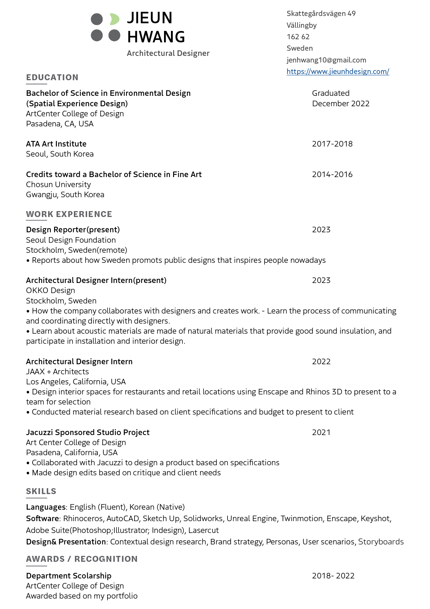

I am very imaginative and have come up with many stories. When I’m working on a project, I always look around and get inspired to create a story. Travel is a must for me. In a new environment, I compare, analyze, and get inspired to create a new story.
As a spatial experience designer, I carefully observe and analyze people and the environment to create spaces that inspire them. I continue to study how to create a space that is how to give valuable space to both people and the environment.
